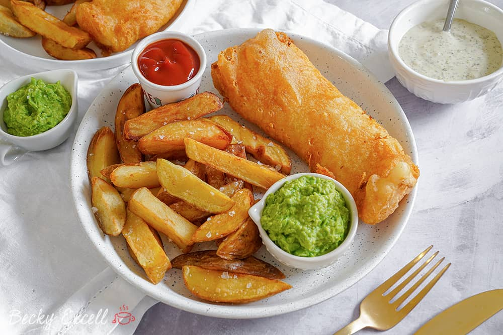

Fish and Chips

Description
Traditional British beer battered fish and chips, served with garden peas.
Ingredients
- Fish Cod/Haddock
- Peas
- Thick cut chips
- Lemon
Batter
- Plain flour
- Corn flour
- Baking powder
- Turmeric
- Lager beer
- Sparking water
- Sunflower oil
Steps
- Mix ingredients for batter in large bowl
- Cover Fish in turmeric and flour
- Add fish to batter bowl
- Fry fish
- Add salt and oil to chips and cook in oven
- Cook peas when chips are nearly ready
- Serve